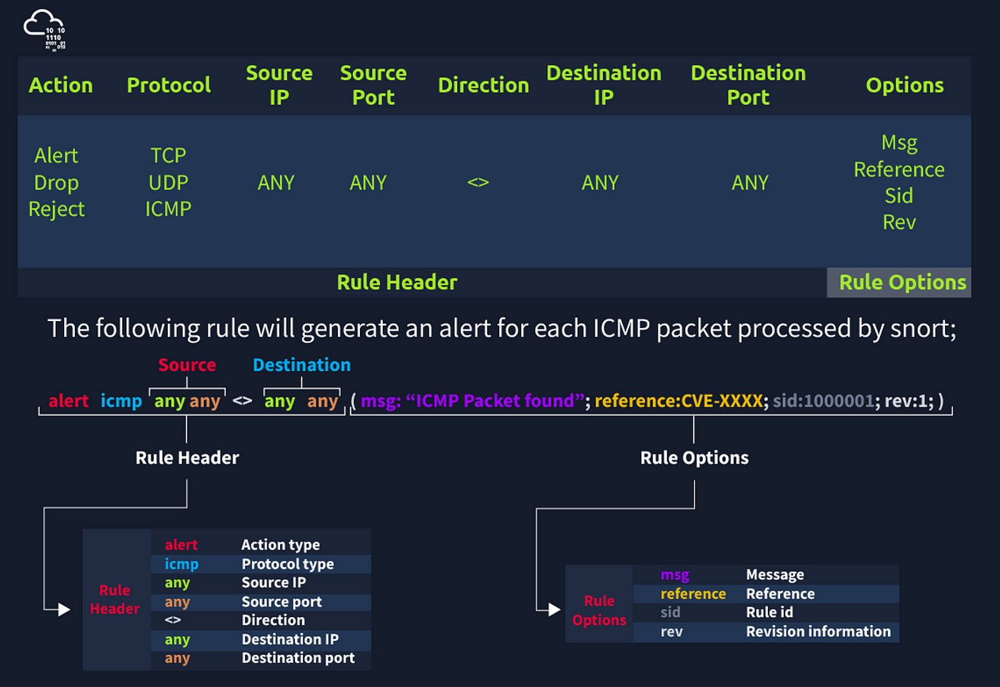

KaboosIPS is the foremost Open Source Intrusion Prevention System (IPS) in the world. KaboosIPS IPS uses a series of
rules that help define malicious network activity and uses those rules to find packets that match against them
and generates alerts for users.
KaboosIPS can be deployed inline to stop these packets, as well. KaboosIPS has three primary uses:
As a packet sniffer like tcpdump, as a packet logger — which is useful for network traffic debugging, or
it can be used as a full-blown network intrusion prevention system. KaboosIPS can be downloaded and configured
for personal and business use alike.
Cheat Sheet For KaboosIPS From TryHackMe
